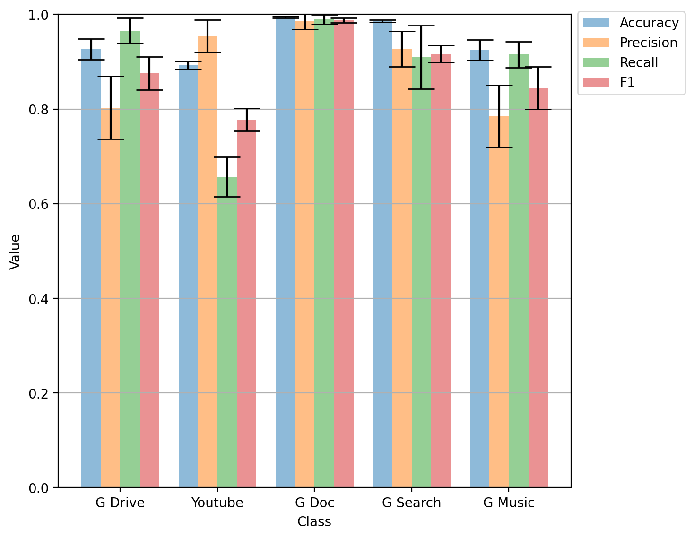

Figure 8(b): Classwise evaluation on human.
import pathlib
import matplotlib as mpl
import matplotlib.pyplot as plt
import numpy as np
import pandas as pd
import seaborn as sns
import statsmodels.stats.api as sms
%matplotlib inline
%config InlineBackend.figure_format='retina'
def compute_confidence_intervals(array, alpha=0.05):
array = np.array(array)
low, high = sms.DescrStatsW(array).tconfint_mean(alpha)
mean = array.mean()
ci = high - mean
return ci
path = pathlib.Path(
"./campaigns/ucdavis-icdm19-git-repo-forked/artifacts/IncrementalSampling_Retraining(human-triggered)_20/"
)
class_reps = list(path.glob("*class_rep.csv"))
per_cls = np.stack(
[
pd.read_csv(file)[:5][["Accuracy", "precision", "recall", "f1-score"]].values
for file in class_reps
],
axis=0,
)
means = np.mean(per_cls, axis=0)
cis = np.zeros([per_cls.shape[1], per_cls.shape[2]])
for i in range(per_cls.shape[1]):
for j in range(per_cls.shape[2]):
cis[i, j] = compute_confidence_intervals(per_cls[:, i, j])
X = ["G Drive", "Youtube", "G Doc", "G Search", "G Music"]
X_axis = np.arange(len(X))
fig, ax = plt.subplots(figsize=(7, 6.5))
ax.bar(
X_axis - 0.3,
means[:, 0],
0.2,
label="Accuracy",
yerr=cis[:, 0],
ecolor="black",
alpha=0.5,
capsize=10,
)
ax.bar(
X_axis - 0.1,
means[:, 1],
0.2,
label="Precision",
yerr=cis[:, 1],
ecolor="black",
alpha=0.5,
capsize=10,
)
ax.bar(
X_axis + 0.1,
means[:, 2],
0.2,
label="Recall",
yerr=cis[:, 2],
ecolor="black",
alpha=0.5,
capsize=10,
)
ax.bar(
X_axis + 0.3,
means[:, 3],
0.2,
label="F1",
yerr=cis[:, 3],
ecolor="black",
alpha=0.5,
capsize=10,
)
plt.xticks(X_axis, X)
ax.set_xlabel("Class")
ax.set_ylabel("Value")
ax.set_ylim([0, 1])
plt.legend()
ax.legend(bbox_to_anchor=(1, 1.02))
plt.grid(axis="y")
plt.show()
